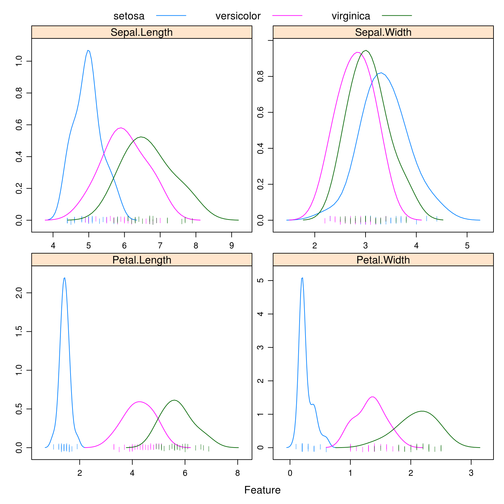
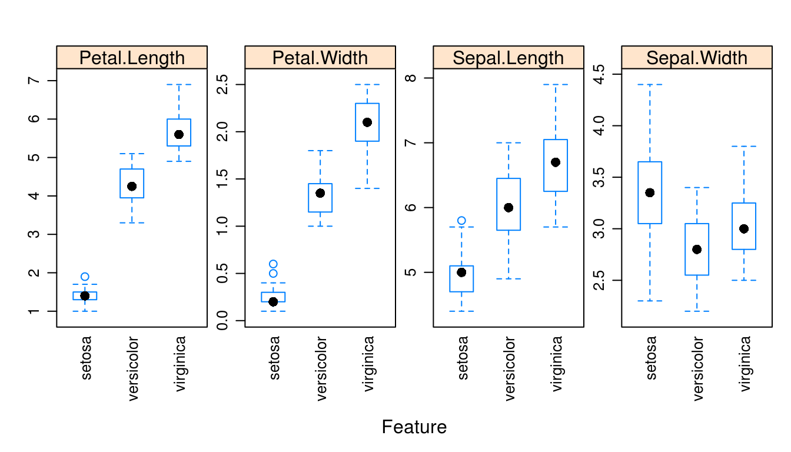

Chapter 9 Generative Models
In this chapter, we continue our discussion of classification methods. We introduce three new methods, each a generative method. This in comparison to logistic regression, which is a discriminative method.
Generative methods model the joint probability, \(p(x, y)\), often by assuming some distribution for the conditional distribution of \(X\) given \(Y\), \(f(x \mid y)\). Bayes theorem is then applied to classify according to \(p(y \mid x)\). Discriminative methods directly model this conditional, \(p(y \mid x)\). A detailed discussion and analysis can be found in Ng and Jordan, 2002.
Each of the methods in this chapter will use Bayes theorem to build a classifier.
\[ p_k(x) = P[Y = k \mid {\mathbf X} = {\mathbf x}] = \frac{\pi_k \cdot f_k({\mathbf x})}{\sum_{i = 1 }^{K} \pi_k \cdot f_k({\mathbf x})} \]
We call \(p_k(x)\) the posterior probability, which we will estimate then use to create classifications. The \(\pi_k\) are called the prior probabilities for each class \(k\). That is, \(P[y = k]\), unconditioned on \(X\). The \(f_k({\mathbf x})\) are called the likelihoods, which are indexed by \(k\) to denote that they are conditional on the classes. The denominator is often referred to as a normalizing constant.
The methods will differ by placing different modeling assumptions on the likelihoods, \(f_k({\mathbf x})\). For each method, the priors could be learned from data or pre-specified.
For each method, classifications are made to the class with the highest estimated posterior probability, which is equivalent to the class with the largest
\[ \log(\hat{\pi}_k \cdot \hat{f}_k({\mathbf x})). \]
By substituting the corresponding likelihoods, simplifying, and eliminating unnecessary terms, we could derive the discriminant function for each.
To illustrate these new methods, we return to the iris data, which you may remember has three classes. After a test-train split, we create a number of plots to refresh our memory.
set.seed(430)
iris_obs <- nrow(iris)
iris_index <- sample(iris_obs, size = trunc(0.50 * iris_obs))
# iris_index <- sample(iris_obs, size = trunc(0.10 * iris_obs))
iris_train <- iris[iris_index, ]
iris_test <- iris[-iris_index, ]caret::featurePlot(x = iris_train[, c("Sepal.Length", "Sepal.Width",
"Petal.Length", "Petal.Width")],
y = iris_train$Species,
plot = "density",
scales = list(x = list(relation = "free"),
y = list(relation = "free")),
adjust = 1.5,
pch = "|",
layout = c(2, 2),
auto.key = list(columns = 3))
caret::featurePlot(x = iris_train[, c("Sepal.Length", "Sepal.Width",
"Petal.Length", "Petal.Width")],
y = iris_train$Species,
plot = "ellipse",
auto.key = list(columns = 3))
caret::featurePlot(x = iris_train[, c("Sepal.Length", "Sepal.Width",
"Petal.Length", "Petal.Width")],
y = iris_train$Species,
plot = "box",
scales = list(y = list(relation="free"),
x = list(rot = 90)),
layout = c(4, 1))
Especially based on the pairs plot, we see that it should not be too difficult to find a good classifier.
Notice that we use caret::featurePlot to access the featurePlot() function without loading the entire caret package.
9.1 Linear Discriminant Analysis
LDA assumes that the predictors are multivariate normal conditioned on the classes.
\[ {\mathbf X} \mid Y = k \sim N(\mu_k, \Sigma) \]
\[ f_k({\mathbf x}) = \frac{1}{(2\pi)^{p/2}|\Sigma|^{1/2}}\exp\left[-\frac{1}{2}(\mathbf x - \mu_k)^{\prime}\Sigma^{-1}(\mathbf x - \mu_k)\right] \]
Notice that \(\Sigma\) does not depend on \(k\), that is, we are assuming the same \(\Sigma\) for each class. We then use information from all the classes to estimate \(\Sigma\).
To fit an LDA model, we use the lda() function from the MASS package.
library(MASS)
iris_lda <- lda(Species ~ ., data = iris_train)
iris_lda## Call:
## lda(Species ~ ., data = iris_train)
##
## Prior probabilities of groups:
## setosa versicolor virginica
## 0.3733333 0.3200000 0.3066667
##
## Group means:
## Sepal.Length Sepal.Width Petal.Length Petal.Width
## setosa 4.978571 3.378571 1.432143 0.2607143
## versicolor 5.995833 2.808333 4.254167 1.3333333
## virginica 6.669565 3.065217 5.717391 2.0956522
##
## Coefficients of linear discriminants:
## LD1 LD2
## Sepal.Length 0.7100013 -0.8446128
## Sepal.Width 1.2435532 2.4773120
## Petal.Length -2.3419418 -0.4065865
## Petal.Width -1.8502355 2.3234441
##
## Proportion of trace:
## LD1 LD2
## 0.9908 0.0092Here we see the estimated \(\hat{\pi}_k\) and \(\hat{\mu}_k\) for each class.
is.list(predict(iris_lda, iris_train))## [1] TRUEnames(predict(iris_lda, iris_train))## [1] "class" "posterior" "x"head(predict(iris_lda, iris_train)$class, n = 10)## [1] setosa virginica setosa setosa virginica setosa
## [7] virginica setosa versicolor setosa
## Levels: setosa versicolor virginicahead(predict(iris_lda, iris_train)$posterior, n = 10)## setosa versicolor virginica
## 23 1.000000e+00 1.517145e-21 1.717663e-41
## 106 2.894733e-43 1.643603e-06 9.999984e-01
## 37 1.000000e+00 2.169066e-20 1.287216e-40
## 40 1.000000e+00 3.979954e-17 8.243133e-36
## 145 1.303566e-37 4.335258e-06 9.999957e-01
## 36 1.000000e+00 1.947567e-18 5.996917e-38
## 119 2.220147e-51 9.587514e-09 1.000000e+00
## 16 1.000000e+00 5.981936e-23 1.344538e-42
## 94 1.599359e-11 9.999999e-01 1.035129e-07
## 27 1.000000e+00 8.154612e-15 4.862249e-32As we should come to expect, the predict() function operates in a new way when called on an lda object. By default, it returns an entire list. Within that list class stores the classifications and posterior contains the estimated probability for each class.
iris_lda_train_pred <- predict(iris_lda, iris_train)$class
iris_lda_test_pred <- predict(iris_lda, iris_test)$classWe store the predictions made on the train and test sets.
accuracy <- function(actual, predicted) {
mean(actual == predicted)
}accuracy(predicted = iris_lda_train_pred, actual = iris_train$Species)## [1] 0.96accuracy(predicted = iris_lda_test_pred, actual = iris_test$Species)## [1] 0.9866667As expected, LDA performs well on both the train and test data.
table(predicted = iris_lda_test_pred, actual = iris_test$Species)## actual
## predicted setosa versicolor virginica
## setosa 22 0 0
## versicolor 0 26 1
## virginica 0 0 26Looking at the test set, we see that we are perfectly predicting both setosa and versicolor. The only error is labeling a virginica as a versicolor.
iris_lda_flat <- lda(Species ~ ., data = iris_train, prior = c(1, 1, 1) / 3)
iris_lda_flat## Call:
## lda(Species ~ ., data = iris_train, prior = c(1, 1, 1)/3)
##
## Prior probabilities of groups:
## setosa versicolor virginica
## 0.3333333 0.3333333 0.3333333
##
## Group means:
## Sepal.Length Sepal.Width Petal.Length Petal.Width
## setosa 4.978571 3.378571 1.432143 0.2607143
## versicolor 5.995833 2.808333 4.254167 1.3333333
## virginica 6.669565 3.065217 5.717391 2.0956522
##
## Coefficients of linear discriminants:
## LD1 LD2
## Sepal.Length 0.7136357 -0.8415442
## Sepal.Width 1.2328623 2.4826497
## Petal.Length -2.3401674 -0.4166784
## Petal.Width -1.8602343 2.3154465
##
## Proportion of trace:
## LD1 LD2
## 0.9901 0.0099Instead of learning (estimating) the proportion of the three species from the data, we could instead specify them ourselves. Here we choose a uniform distributions over the possible species. We would call this a “flat” prior.
iris_lda_flat_train_pred <- predict(iris_lda_flat, iris_train)$class
iris_lda_flat_test_pred <- predict(iris_lda_flat, iris_test)$classaccuracy(predicted = iris_lda_flat_train_pred, actual = iris_train$Species)## [1] 0.96accuracy(predicted = iris_lda_flat_test_pred, actual = iris_test$Species)## [1] 1This actually gives a better test accuracy!
9.2 Quadratic Discriminant Analysis
QDA also assumes that the predictors are multivariate normal conditioned on the classes.
\[ {\mathbf X} \mid Y = k \sim N(\mu_k, \Sigma_k) \]
\[ f_k({\mathbf x}) = \frac{1}{(2\pi)^{p/2}|\Sigma_k|^{1/2}}\exp\left[-\frac{1}{2}(\mathbf x - \mu_k)^{\prime}\Sigma_{k}^{-1}(\mathbf x - \mu_k)\right] \]
Notice that now \(\Sigma_k\) does depend on \(k\), that is, we are allowing a different \(\Sigma_k\) for each class. We only use information from class \(k\) to estimate \(\Sigma_k\).
iris_qda <- qda(Species ~ ., data = iris_train)
iris_qda## Call:
## qda(Species ~ ., data = iris_train)
##
## Prior probabilities of groups:
## setosa versicolor virginica
## 0.3733333 0.3200000 0.3066667
##
## Group means:
## Sepal.Length Sepal.Width Petal.Length Petal.Width
## setosa 4.978571 3.378571 1.432143 0.2607143
## versicolor 5.995833 2.808333 4.254167 1.3333333
## virginica 6.669565 3.065217 5.717391 2.0956522Here the output is similar to LDA, again giving the estimated \(\hat{\pi}_k\) and \(\hat{\mu}_k\) for each class. Like lda(), the qda() function is found in the MASS package.
Consider trying to fit QDA again, but this time with a smaller training set. (Use the commented line above to obtain a smaller test set.) This will cause an error because there are not enough observations within each class to estimate the large number of parameters in the \(\Sigma_k\) matrices. This is less of a problem with LDA, since all observations, no matter the class, are being use to estimate the shared \(\Sigma\) matrix.
iris_qda_train_pred <- predict(iris_qda, iris_train)$class
iris_qda_test_pred <- predict(iris_qda, iris_test)$classThe predict() function operates the same as the predict() function for LDA.
accuracy(predicted = iris_qda_train_pred, actual = iris_train$Species)## [1] 0.9866667accuracy(predicted = iris_qda_test_pred, actual = iris_test$Species)## [1] 0.96table(predicted = iris_qda_test_pred, actual = iris_test$Species)## actual
## predicted setosa versicolor virginica
## setosa 22 0 0
## versicolor 0 23 0
## virginica 0 3 27Here we find that QDA is not performing as well as LDA. It is misclassifying versicolors. Since QDA is a more complex model than LDA (many more parameters) we would say that QDA is overfitting here.
Also note that, QDA creates quadratic decision boundaries, while LDA creates linear decision boundaries. We could also add quadratic terms to LDA to allow it to create quadratic decision boundaries.
9.3 Naive Bayes
Naive Bayes comes in many forms. With only numeric predictors, it often assumes a multivariate normal conditioned on the classes, but a very specific multivariate normal.
\[ {\mathbf X} \mid Y = k \sim N(\mu_k, \Sigma_k) \]
Naive Bayes assumes that the predictors \(X_1, X_2, \ldots, X_p\) are independent. This is the “naive” part of naive Bayes. The Bayes part is nothing new. Since \(X_1, X_2, \ldots, X_p\) are assumed independent, each \(\Sigma_k\) is diagonal, that is, we assume no correlation between predictors. Independence implies zero correlation.
This will allow us to write the (joint) likelihood as a product of univariate distributions. In this case, the product of univariate normal distributions instead of a (joint) multivariate distribution.
\[ f_k({\mathbf x}) = \prod_{j = 1}^{j = p} f_{kj}(x_j) \]
Here, \(f_{kj}(x_j)\) is the density for the \(j\)-th predictor conditioned on the \(k\)-th class. Notice that there is a \(\sigma_{kj}\) for each predictor for each class.
\[ f_{kj}(x_j) = \frac{1}{\sigma_{kj}\sqrt{2\pi}}\exp\left[-\frac{1}{2}\left(\frac{x_j - \mu_{kj}}{\sigma_{kj}}\right)^2\right] \]
When \(p = 1\), this version of naive Bayes is equivalent to QDA.
library(e1071)
iris_nb <- naiveBayes(Species ~ ., data = iris_train)
iris_nb##
## Naive Bayes Classifier for Discrete Predictors
##
## Call:
## naiveBayes.default(x = X, y = Y, laplace = laplace)
##
## A-priori probabilities:
## Y
## setosa versicolor virginica
## 0.3733333 0.3200000 0.3066667
##
## Conditional probabilities:
## Sepal.Length
## Y [,1] [,2]
## setosa 4.978571 0.3774742
## versicolor 5.995833 0.5812125
## virginica 6.669565 0.6392003
##
## Sepal.Width
## Y [,1] [,2]
## setosa 3.378571 0.4349177
## versicolor 2.808333 0.3269313
## virginica 3.065217 0.3600615
##
## Petal.Length
## Y [,1] [,2]
## setosa 1.432143 0.1743848
## versicolor 4.254167 0.5166608
## virginica 5.717391 0.5540366
##
## Petal.Width
## Y [,1] [,2]
## setosa 0.2607143 0.1133310
## versicolor 1.3333333 0.2334368
## virginica 2.0956522 0.3022315Many packages implement naive Bayes. Here we choose to use naiveBayes() from the package e1071. (The name of this package has an interesting history. Based on the name you wouldn’t know it, but the package contains many functions related to machine learning.)
The Conditional probabilities: portion of the output gives the mean and standard deviation of the normal distribution for each predictor in each class. Notice how these mean estimates match those for LDA and QDA above.
Note that naiveBayes() will work without a factor response, but functions much better with one. (Especially when making predictions.) If you are using a 0 and 1 response, you might consider coercing to a factor first.
head(predict(iris_nb, iris_train))## [1] setosa virginica setosa setosa virginica setosa
## Levels: setosa versicolor virginicahead(predict(iris_nb, iris_train, type = "class"))## [1] setosa virginica setosa setosa virginica setosa
## Levels: setosa versicolor virginicahead(predict(iris_nb, iris_train, type = "raw"))## setosa versicolor virginica
## [1,] 1.000000e+00 3.134201e-16 2.948226e-27
## [2,] 4.400050e-257 5.188308e-08 9.999999e-01
## [3,] 1.000000e+00 2.263278e-14 1.168760e-24
## [4,] 1.000000e+00 4.855740e-14 2.167253e-24
## [5,] 1.897732e-218 6.189883e-08 9.999999e-01
## [6,] 1.000000e+00 8.184097e-15 6.816322e-26Oh look, predict() has another new mode of operation. If only there were a way to unify the predict() function across all of these methods…
iris_nb_train_pred <- predict(iris_nb, iris_train)
iris_nb_test_pred <- predict(iris_nb, iris_test)accuracy(predicted = iris_nb_train_pred, actual = iris_train$Species)## [1] 0.9466667accuracy(predicted = iris_nb_test_pred, actual = iris_test$Species)## [1] 0.9466667table(predicted = iris_nb_test_pred, actual = iris_test$Species)## actual
## predicted setosa versicolor virginica
## setosa 22 0 0
## versicolor 0 26 4
## virginica 0 0 23Like LDA, naive Bayes is having trouble with virginica.
| Method | Train Accuracy | Test Accuracy |
|---|---|---|
| LDA | 0.9600000 | 0.9866667 |
| LDA, Flat Prior | 0.9600000 | 1.0000000 |
| QDA | 0.9866667 | 0.9600000 |
| Naive Bayes | 0.9466667 | 0.9466667 |
Summarizing the results, we see that Naive Bayes is the worst of LDA, QDA, and NB for this data. So why should we care about naive Bayes?
The strength of naive Bayes comes from its ability to handle a large number of predictors, \(p\), even with a limited sample size \(n\). Even with the naive independence assumption, naive Bayes works rather well in practice. Also because of this assumption, we can often train naive Bayes where LDA and QDA may be impossible to train because of the large number of parameters relative to the number of observations.
Here naive Bayes doesn’t get a chance to show its strength since LDA and QDA already perform well, and the number of predictors is low. The choice between LDA and QDA is mostly down to a consideration about the amount of complexity needed.
9.4 Discrete Inputs
So far, we have assumed that all predictors are numeric. What happens with categorical predictors?
iris_train_mod <- iris_train
iris_train_mod$Sepal.Width <- ifelse(iris_train$Sepal.Width > 3,
ifelse(iris_train$Sepal.Width > 4,
"Large", "Medium"),
"Small")
unique(iris_train_mod$Sepal.Width)## [1] "Medium" "Small" "Large"Here we make a new dataset where Sepal.Width is categorical, with levels Small, Medium, and Large. We then try to train classifiers using only the sepal variables.
naiveBayes(Species ~ Sepal.Length + Sepal.Width, data = iris_train_mod)##
## Naive Bayes Classifier for Discrete Predictors
##
## Call:
## naiveBayes.default(x = X, y = Y, laplace = laplace)
##
## A-priori probabilities:
## Y
## setosa versicolor virginica
## 0.3733333 0.3200000 0.3066667
##
## Conditional probabilities:
## Sepal.Length
## Y [,1] [,2]
## setosa 4.978571 0.3774742
## versicolor 5.995833 0.5812125
## virginica 6.669565 0.6392003
##
## Sepal.Width
## Y Large Medium Small
## setosa 0.07142857 0.67857143 0.25000000
## versicolor 0.00000000 0.25000000 0.75000000
## virginica 0.00000000 0.43478261 0.56521739Naive Bayes makes a somewhat obvious and intelligent choice to model the categorical variable as a multinomial. It then estimates the probability parameters of a multinomial distribution.
lda(Species ~ Sepal.Length + Sepal.Width, data = iris_train_mod)## Call:
## lda(Species ~ Sepal.Length + Sepal.Width, data = iris_train_mod)
##
## Prior probabilities of groups:
## setosa versicolor virginica
## 0.3733333 0.3200000 0.3066667
##
## Group means:
## Sepal.Length Sepal.WidthMedium Sepal.WidthSmall
## setosa 4.978571 0.6785714 0.2500000
## versicolor 5.995833 0.2500000 0.7500000
## virginica 6.669565 0.4347826 0.5652174
##
## Coefficients of linear discriminants:
## LD1 LD2
## Sepal.Length 2.051602 0.4768608
## Sepal.WidthMedium 1.728698 -0.4433340
## Sepal.WidthSmall 3.173903 -2.2804034
##
## Proportion of trace:
## LD1 LD2
## 0.9764 0.0236LDA however creates dummy variables, here with Large is the reference level, then continues to model them as normally distributed. Not great, but better then not using a categorical variable.
9.5 RMarkdown
The RMarkdown file for this chapter can be found here. The file was created using R version 3.3.2 and the following packages:
- Base Packages, Attached
## [1] "stats" "graphics" "grDevices" "utils" "datasets" "base"- Additonal Packages, Attached
## [1] "e1071" "MASS"- Additonal Packages, Not Attached
## [1] "Rcpp" "highr" "nloptr" "plyr"
## [5] "class" "methods" "iterators" "tools"
## [9] "digest" "lme4" "evaluate" "tibble"
## [13] "gtable" "nlme" "lattice" "mgcv"
## [17] "Matrix" "foreach" "yaml" "parallel"
## [21] "SparseM" "stringr" "knitr" "MatrixModels"
## [25] "stats4" "rprojroot" "grid" "caret"
## [29] "nnet" "ellipse" "rmarkdown" "bookdown"
## [33] "minqa" "ggplot2" "reshape2" "car"
## [37] "magrittr" "backports" "scales" "codetools"
## [41] "ModelMetrics" "htmltools" "splines" "assertthat"
## [45] "pbkrtest" "colorspace" "quantreg" "stringi"
## [49] "lazyeval" "munsell"